360°
Drag, swipe or turn your phone to look around. Fullscreen and Cardboard (side by side) from the player.
Video
Panoramas
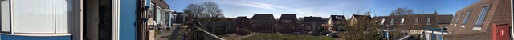
Balkonpanorama, all the way round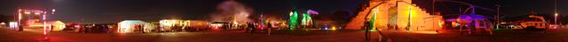
CCC 2011panorama, all the way round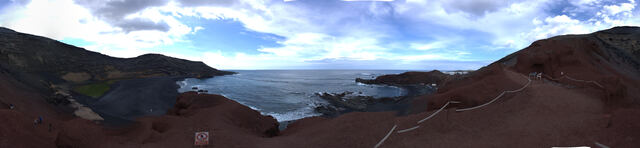
Green Lakepanorama, all the way round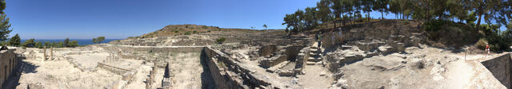
Kamirospanorama, all the way round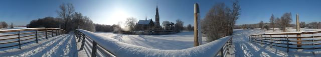
Kerkpanorama, all the way round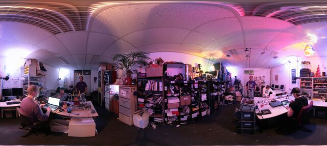
NURDspacepanorama, all the way round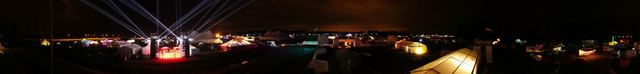
OHM2013panorama, all the way round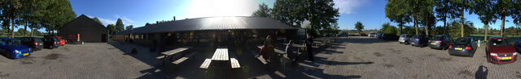
Outside the linepanorama, all the way round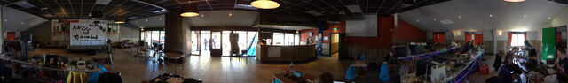
Party areapanorama, all the way round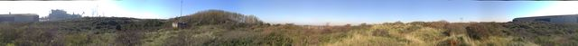
Tatapanorama, all the way round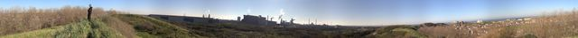
Tata, againpanorama, all the way round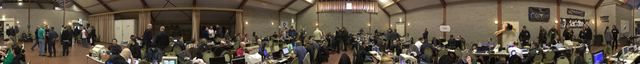
X2012panorama, all the way round